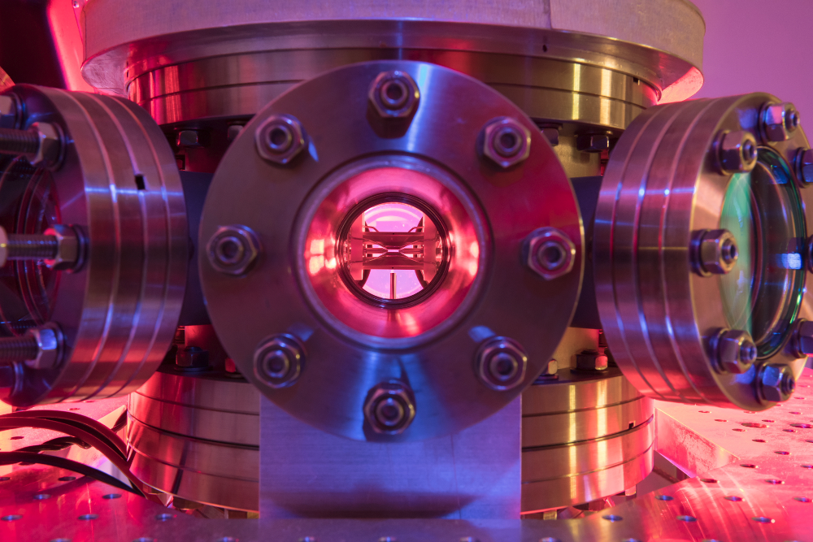
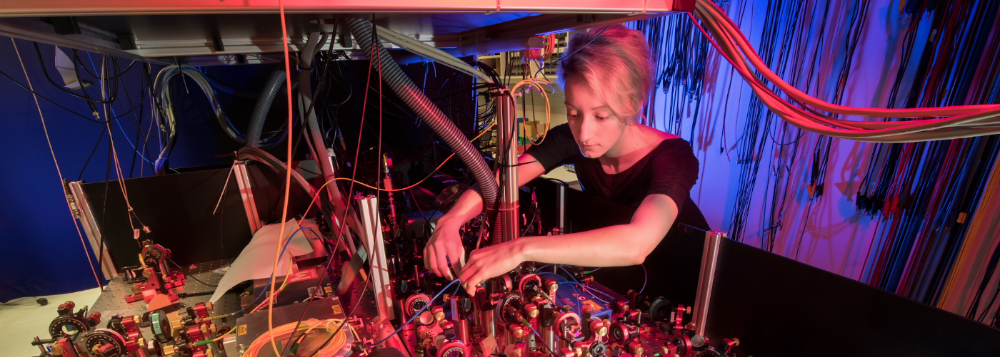
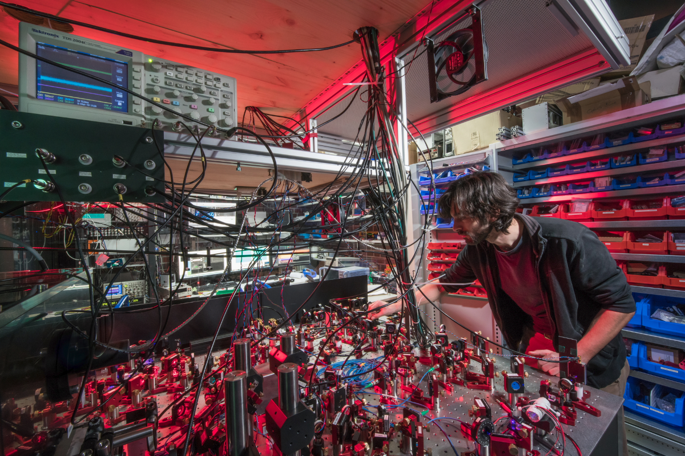

Welcome
Welcome to the website for the molecular quantum-technologies group at the University of Innsbruck. We aim to provide control over single molecules at the quantum level, by using techniques that we have developed for quantum information processing with trapped ions.
A detailed description of the planned research within the ERC starting grant project QCosmo can be found at Research.

Philipp Schindler
University of Innsbruck
I am a researcher working on experimental quantum physics with trapped ions at the University of Innsbruck.
We are investigating a physical platform that might host a future quantum computer - Trapped atomic ions. The quantum register consists of a string of individual atoms that store information in their internal state. We confine ionized Calcium atoms and manipulate their state with laser pulses.
I have received an ERC starting grant to apply these quantum computing techniques to polyatomic molecules
Stefan Walser
University of Innsbruck
I did my PhD at the TU Vienna in the group of Arno Rauschenbeutel. There I worked on a project showing theoretically end experimentally that the polarization state of light emitted by subwavelength emitters can give rise to a fundamental error in position measurements of the emitters.
Verena Podlesnic
University of Innsbruck
After finishing her undergraduate studies in Innsbruck, Verena joinded the AQTION team for her Master’s thesis. She was involved in setting up and characterizing a compact, robust quantum demonstrator with modular structure in two 19" racks. Now she joined our team as research assistant and helps us to build the lab and trap our first molecular ions.
Zhenlin Wu
University of Innsbruck
During his undergraduate study, Zhenlin joined the group of Prof. Yiheng Lin in the University of Science and Technology of China (USTC) where he learned about trapped ion quantum system. After his graduation he studied his master in the group of Prof. Rene Gerritsma at the University of Amsterdam, where he was involved in setting up the experiment for quantum simulation with 2D trapped ion crystals. He will be working on realizing quantum characterization and control of single trapped molecular ions in the QCosmo project during his PhD.
Research
Quantum characterization and control of single molecules
Goal of the project
In the last decade, a worldwide effort to build a usable quantum computer has been made. Trapped atomic ions are one of the most promising physical quantum computing architectures and have been the focus of our research at the University of Innsbruck.
Within the ERC starting grant QCosmo, we aim to explore the physics and harness the computational potential of a more complex trapped ion system: polyatomic molecules. As a first task, we tackle the long-standing challenge of preparing, controlling and characterizing single polyatomic molecules at the quantum level using techniques that have been developed for quantum computing with atomic ions.
Quantum logic with trapped molecular ions
Performing spectroscopy on molecular ions has a long and successful history. Unfortunately, the commonly used methods need to destroy the molecules in order to detect their state. Within QCosmo we will perform non-destructive measurements with quantum logic methods that have been invented for atomic clocks with trapped atomic ions. These quantum logic methods couple the ion of interest to an atomic ion that is suitable for quantum computing and for which quantum control techniques have already been developed. These quantum logic techniques are at the heart of one of today’s most precise atomic clocks.
The core concept of quantum logic spectroscopy is based on the coupling of the spectroscopy ion’s motion to the logic ion’s motion via the strong electromagnetic interaction. This coupling allows us to transfer the techniques that have been developed for quantum computing, onto less accessible species, be it atoms or molecules.
Recently, these techniques have been transferred to molecular ions at PTB in Germany, NIST in the USA, and the University of Basel. To date, these quantum logic methods have been limited to diatomic molecules and to precision spectroscopy at the millisecond timescale. We aim to transfer these techniques to ultrafast timescales and to complex polyatomic molecules, opening a new window into investigating dynamic quantum processes of molecular ions that have not being studied yet.
Characterizing ultrafast processes
Internal processes in molecules often occur at ultrafast picosecond and femtosecond timescales, which makes them hard to access by standard spectroscopic techniques. To overcome this problem, ultrafast time domain spectroscopy has been invented which uses a series of laser pulses at the femtosecond timescale to gain information about molecular processes.
We plan to transfer these spectroscopy methods to molecular ions by exploiting the fact that each photon absorption event comes with a small momentum kick to molecule. We will adapt an existing single photon absorption detection technique by measuring the momentum of the absorbed photon using the co-trapped atomic ion. This technique is independent of the molecular species and the transition type and will thus provide a solid basis for our experiments. More details on the proposed methods can be found in the publication Ultrafast infrared spectroscopy with single molecular ions
Molecule powered quantum devices
Complex molecular systems are expected to play an important role for emerging quantum technologies. In particular, ultrafast quantum processes in molecules have been proposed for hosting a small-scale quantum information processor operating over 1000 times faster than current devices. We envision that these operations can be the heart of a hybrid molecular-atomic quantum information processor, powered by the quantum logic techniques that we will develop within QCosmo.
Master’s theses
Theses can be performed by physics students of the University of Innsbruck or foreign students as an external thesis with their institution.
1.) Trapping molecules in a Paul trap
Scientific project
Many properties of molecular ions are not known because they feature a complex internal structure and their quantum states are hard to control and read-out. Recently, quantum logic techniques, that transfer the precise tools from quantum computing to molecular spectroscopy, have been shown in various labs. We aim to prepare and control single polyatomic molecules by co-trapping them with an atomic logic ion.
Planned work
You will adapt an existing ion trap that is able to store Calcium ions for single molecular ions. A crucial part will be the choice of ionization schemes. One method is electron impact ionization, which is easy to use and can be applied to many molecular species. Its downside is that it deposits quite a lot of energy into the molecule, which might fragment the molecule. The second option is to use photo-ionization, which requires UV laser light, but can be molecule specific and yield less fragmentation. You will investigate the ionization behavior and storage time for multiple molecular species, starting with Nitrogen and Acetylene
What you get out
You will work on a state-of-the-art ion trapping experiment. We will provide excellent training in optical systems, vacuum systems, ion trapping methods, and ionization techniques. You will be completely embedded in a vibrant team, performing cutting edge research. 
2.) Generation of infrared ultrafast laser pulses
Scientific project
Dynamical transport effects in molecules are usually investigated using ultrafast laser pulses at the femtosecond timescale. We plan to investigate ultrafast effects in the vibrational degrees of freedom of single molecular ions using quantum logic techniques. Infrared laser light is required to manipulate the vibrational states of the molecule.
Planned work
You will install and test a commercial laser system creating ultrashort pulses at the 200fs timescale in the visible and infrared domain. For this, a device to characterize the temporal profile in the femtosecond regime will be develoepd and tested. Finally, you will perform ultrafast time-domain spectroscopy in a molecule gas cell.
What you get out
You will work on a state-of-the-art ultrafast laser system. We will provide excellent training in optical systems, ultrafast physics, and molecular physics. You will be completely embedded in a vibrant team, performing cutting edge research.

3.) Rapid frequency switching of laser diodes
Scientific project
Molecules show a rich internal structure including electronic, vibrational, and rotational degrees of freedom. In order to control the quantum state of the molecule, it needs to be prepared in a single rotational state. The rotational state can be manipulated using a Raman transition that is near-resonant to a vibrational overtone at a wavelength of around 1500nm. The required tunability of the difference frequency of the two light fields is about 500GHz.Usually, such a tuning range is only available with switching time in the second timescale.
Planned work
You will perform vibrational overtone spectroscopy of Acetylene at 1500nm using a stabilized laser diode. After this, a two-diode laser system that allows rapid frequency-switching of the difference frequency on the microsecond timescale will be developed. The system will be characterized using molecular spectroscopy.
What you get out
You will develop a state-of-the-art diode laser system. We will provide excellent training in optical systems, ultrafast physics, and molecular physics. You will be completely embedded in a vibrant team, performing cutting edge research.

PhD positions
Open positions
We are currently offering two PhD positions with following focus at the University of Innsbruck:
Quantum logic spectroscopy with polyatomic molecular ions
Ultrafast quantum control of molecular ions
We are searching for young talented physicists to join our experiments on quantum logic with trapped molecular ions. A description of the project can be found on our homepage
Training
PhD students will receive excellent training in all aspects of cutting-edge atomic and molecular optics experiments and the quantum physics that underlies them. The University of Innsbruck offers a world-class environment to learn quantum physics and quantum technology and to directly apply this knowledge in world-leading experiments. Consider joining our group if you are interested in
doing hands-on experimental work in a world-class laboratory
learning about the fundamentals of quantum physics and its application for future technologies
working in a stunning environment and a lively international team.
How to apply
To apply for a position, please send an email to philipp.schindler@uibk.ac.at including following information:
Your personal motivation for applying to a specific project
A curriculum vitae including your scholar achievements, research experience, and references
Applicants require a master’s degree in physics. Information on the formal requirements to join the physics PhD program at the University of Innsbruck can be found here. Students will be paid during their entire thesis duration.

Contact
- philipp.schindler@uibk.ac.at
- Technikerstrasse 25/4, Innsbruck, 6020
- DM Me